Bottom curling: identificar e corrigir a perda de aderência
Reconheça a borda levantando, entenda por que o contato diminui a cada ciclo e corrija a causa sem mascarar o problema com superexposição.
Leitura visual da falhaDose inferior × transiçãoProtocolo de correção
O processo em uma frase
A borda da base levanta por tensão ou contato insuficiente; a área aderida diminui e a separação seguinte amplia a falha. A direção do ajuste depende da evidência — aumentar dose inferior nem sempre é a resposta.
1
O que é bottom curling
É o levantamento ou empenamento da borda da base durante a impressão. O efeito reduz o contato com a plataforma e pode evoluir para descolamento parcial ou completo.
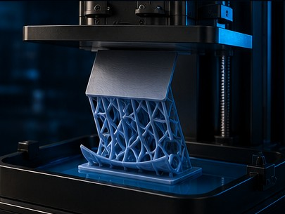
Base curvada nas bordas com perda progressiva de contato — o defeito que este guia trata.
Em uma falha leve, a impressora continua trabalhando sobre uma base já deformada. O modelo pode terminar, mas fica inclinado, dimensionalmente incorreto ou com camadas comprimidas de maneira desigual.
O defeito nasce da combinação entre tensão de cura e gradiente térmico, aderência insuficiente, estado da plataforma e forças mecânicas de separação.
Diagnóstico importante: bottom curling não é apenas “a peça não grudou”. A borda pode aderir no início, curvar aos poucos e perder contato a cada ciclo de separação.
Área de contato
O ciclo que se retroalimenta
Quanto mais a borda curva, menor a área que ainda segura a peça — e maior a força que essa área precisa suportar no próximo peel.
Referência visual Quanton3D
Iron
A correção do bottom curling depende do conjunto impressora, geometria, parâmetros, ambiente e resina. Não existe resina que elimine a falha sozinha em um processo mal ajustado — o frasco aparece aqui apenas como identidade visual da marca.
2
Como a falha evolui
O descolamento costuma ser progressivo. Entender a sequência ajuda a encontrar a causa antes de simplesmente aumentar a exposição.
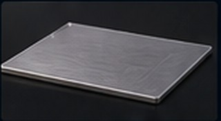
1
Base formadaAs primeiras camadas aderem, mas já podem conter gradiente térmico ou contato desigual.
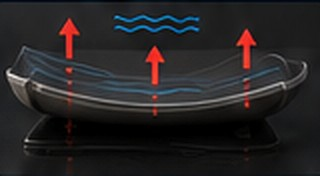
2
Borda curvaContração, temperatura desigual ou baixa aderência afastam uma extremidade da plataforma.
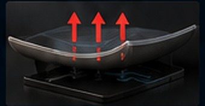
3
Peel amplia a falhaA força de separação atua sobre uma área menor e facilita o avanço do descolamento.
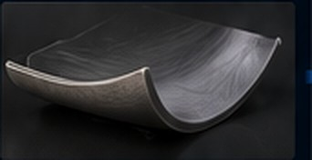
4
Base anormalA impressão pode continuar torta, criando diferença de altura, compressão e perda dimensional.
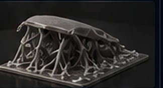
5
DescolamentoA ligação restante é vencida. A peça cai no tanque ou fica presa ao filme.
3
Principais causas
A falha normalmente nasce da combinação entre tensão acumulada, contato insuficiente e carga mecânica durante a separação.
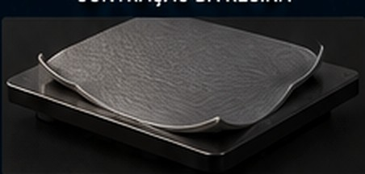
Causa 1
Tensão de cura e gradiente térmico
A fotopolimerização gera calor e contração. Diferenças de dose, temperatura ou restrição entre centro e borda podem acumular tensão suficiente para curvar a base.
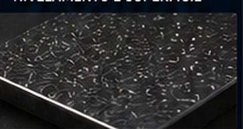
Causa 2
Contaminação da plataforma
Óleo, gordura, digitais, resíduo curado ou partículas reduzem a área real de contato e deixam a base irregular.
Causa 3
Plataforma desnivelada
O gap inicial fica diferente entre os lados. A base ou o raft nasce inclinado e uma região recebe menos compressão e adesão.
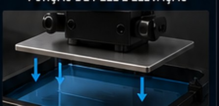
Causa 4
Movimento agressivo
Elevação muito rápida aumenta a carga dinâmica de separação. Material ainda pouco consolidado ou contato fraco pode se desprender parcialmente.
Causa 5
Plataforma riscada ou danificada
Desgaste severo, empenamento ou danos podem tornar o contato imprevisível. Riscos leves não devem ser confundidos com deformação da placa.
Complementar
Dose inferior inadequada
Dose insuficiente forma uma base fraca; dose excessiva pode aumentar crescimento dimensional, rigidez local e tensão de contração. Decida pela aparência e pelo ponto em que a falha começa, não por tentativa cega.
Complementar
Transição inferior brusca
Uma queda abrupta entre a dose das camadas inferiores e a dose normal cria uma mudança de conversão e rigidez. Se a falha nasce perto do fim da fundação, revise as camadas de transição.
Complementar
Área de base e geometria
Bases longas, maciças ou com variação térmica elevada acumulam mais tensão. Rafts muito extensos também podem amplificar a força de separação.
Material
Contração da resina
Maior contração tende a elevar a mudança dimensional e a tensão interna. Compare o comportamento por aplicação e confirme em ensaio controlado.
Antes de mexer em exposição, confirme o básico. Parâmetro não conserta placa suja, desnivelada ou mecanicamente deformada.
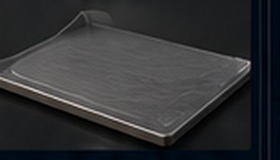
Contato uniforme
Plataforma limpa, paralela e estável. A base recebe compressão semelhante e resiste melhor aos ciclos de peel.
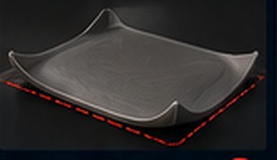
Contato desigual
O lado mais distante pode formar uma base fina, incompleta ou inclinada. Em peças grandes, o erro se torna muito evidente.
Compressão semelhante em toda a área
Como o contato bom se comporta
Os três pontos respondem juntos e com a mesma intensidade. A base inteira apoia.
Extremidades com menos apoio
Como o contato ruim se comporta
O centro segura, as pontas afinam. São elas que vão levantar primeiro no próximo ciclo.
Leitura rápida: a base correta mantém toda a superfície apoiada. No curling, os cantos se afastam primeiro e a área útil de aderência diminui.
Sobre lixar a plataforma: faça apenas quando o fabricante permitir e quando houver evidência de desgaste superficial. Lixar uma placa empenada ou um problema de nivelamento só cria mais um defeito para corrigir.
5
Leitura dos sintomas
O formato da base e o momento em que a falha aparece ajudam a priorizar as verificações.
↗
Uma borda levantada e o restante aderido
Priorize nivelamento, contaminação localizada, dano na placa e gradiente térmico na geometria.
／
Raft inteiro inclinado
Forte indício de plataforma fora de paralelismo ou Z inicial desigual.
⚡
Descola quando a área cresce
Revise lift speed, área transversal, sucção, rigidez da base e resistência das camadas de transição.
🧼
Falha muda de posição entre impressões
Procure gordura, digitais, partículas, resíduo curado ou procedimento de limpeza inconsistente.
▱
Base completa, mas cantos curvados
Considere tensão de cura, dose inferior excessiva, transição abrupta, base extensa, mudança brusca de espessura e temperatura desigual.
⬆
Peça inteira no FEP
O problema já ultrapassou curling leve. Verifique fundação, gap inicial, superfície, parâmetros de base e mecânica de peel.
6
Dose inferior, dose normal e transição
O mesmo sintoma pode exigir direções opostas. Use a evidência da base para decidir o que testar.
Base fina, mole ou incompleta
Possível dose inferior insuficiente
Confirme nivelamento, Z inicial, altura de camada e limpeza.
Verifique se parte da fundação ficou no filme.
Compare com o parâmetro oficial da combinação resina × impressora.
Se a evidência persistir, fortaleça a fundação em pequenos passos controlados.
Base segura, grossa e com cantos curvos
Possível excesso de dose ou tensão
Não continue aumentando a exposição inferior.
Observe crescimento lateral, pé de elefante e remoção excessivamente difícil.
Revise dose, quantidade de camadas inferiores e massa do raft separadamente.
Confirme se a curvatura acompanha a geometria, e não uma posição fixa da plataforma.
Falha perto do fim da fundação
Transição pode estar abrupta
Localize no preview a altura exata em que a borda começa a abrir.
Compare essa altura com o fim das camadas inferiores e de transição.
Use transição gradual compatível com o formato e o firmware da máquina.
Não confunda transição de exposição com transição geométrica do modelo.
A base fica e descola quando a área cresce
Priorize a mecânica de separação
Revise área transversal, cavidades fechadas e drenagem.
Confirme condição e tensão do filme FEP, PFA ou ACF.
Avalie velocidade, aceleração, estágios e distância de elevação.
Não use exposição para esconder força de separação excessiva.
Teste decisivo: anote a camada em que o curling começa. Se coincide com uma mudança de dose, seção ou fechamento de cavidade, existe uma hipótese verificável. Sem essa correlação, mexer em parâmetros ainda é chute.
7
Protocolo de correção na ordem certa
Mude uma família de variáveis por vez. Ajustar tudo simultaneamente impede descobrir o que realmente resolveu.
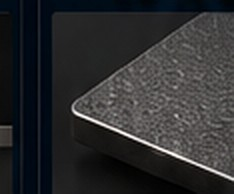
Limpar e inspecionar
Remova resíduo, gordura e digitais. Confirme que não há peça curada sobre o filme ou tela.
Nivelar e conferir Z
Garanta paralelismo e resistência uniforme no teste de folha ou procedimento específico da máquina. Ver o guia de nivelamento →
Validar a fundação
Separe base fraca de base supercurada. Revise dose inferior, quantidade de camadas e transição em uma única direção por rodada.
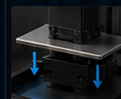
Reduzir agressividade
Quando a evidência aponta para separação agressiva, reduza velocidade ou aceleração inicial e use estágios mais suaves. Confirme distância suficiente para o filme liberar totalmente.
Rever geometria e ambiente
Reduza base maciça, distribua área, estabilize temperatura e evite correntes de ar diretamente sobre a resina.
8
Direção dos ajustes
Estes são caminhos de diagnóstico, não receitas universais. Registre cada alteração e valide com uma impressão curta.
Se a base está fraca
Camadas inferiores
Confirme primeiro limpeza e nivelamento.
Se houver evidência de subcura, fortaleça a fundação em pequenos passos.
Se a base já está grossa e muito presa, não aumente a dose.
Observe pé de elefante, fragilidade e dificuldade de remoção.
Use transição coerente para não criar degrau abrupto.
Se a peça solta durante o peel
Movimento
Reduza a agressividade do início do lift quando a falha coincide com o peel.
Considere movimento em dois estágios.
Ajuste lift distance apenas quando houver evidência de separação incompleta do filme.
Evite velocidades altas copiadas de outra máquina.
Se os cantos curvam
Térmico e geometria
Mantenha resina e ambiente estáveis.
Evite resfriamento externo agressivo e localizado.
Reduza grandes massas e transições bruscas.
Compare materiais com menor contração para a aplicação.
Se a falha é localizada
Plataforma
Limpe com método repetível.
Inspecione empenamento e dano real.
Refaça o nivelamento.
Troque ou recupere a placa somente conforme orientação do fabricante.
Se a base é muito grande
Área e orientação
Divida a seção transversal quando possível.
Evite raft maior que o necessário.
Incline peças para reduzir crescimento súbito de área.
Distribua múltiplas peças na plataforma com equilíbrio.
Se continua falhando
Controle do teste
Use o mesmo lote de resina e temperatura.
Registre parâmetros e posição na plataforma.
Teste a tela e o filme.
Compare com um gabarito simples antes da peça final.
9
Estimador de risco
Movimente os controles conforme a condição observada. O índice apenas ordena prioridades de inspeção; não é medição física, probabilidade nem parâmetro de impressão.
0 = muito ruim · 100 = limpa, nivelada e estável
0 = suave · 100 = muito rápido / agressivo
0 = baixo · 100 = alto
0 = pequena e gradual · 100 = extensa e maciça
Índice didático41/100
Risco moderado
Comece confirmando limpeza e nivelamento; depois reduza a agressividade do lift e observe a geometria da base.
Regra de ouro: quanto pior a aderência, menor a margem para suportar tensão de cura e força de separação.
10
Diagnóstico por sintomas
Marque o que aparece na impressão para receber uma ordem de verificação.
Prioridades de inspeção
Marque os sintomas ao lado e clique em Analisar sintomas.
11
Checklist antes de repetir a impressão
Não desperdice outra cuba de resina repetindo exatamente o mesmo cenário.
Confirme antes de reimprimir
Plataforma sem gordura, digitais, resíduos ou partículas
Nivelamento e Z inicial conferidos pelo procedimento da máquina
Filme FEP, PFA ou ACF e tela sem resíduos curados ou dano aparente
Dose inferior, dose normal, quantidade de camadas e transição registradas
Direção da dose escolhida pela evidência: base fraca ou base supercurada
Movimento inferior revisado se a falha coincide com a separação
Espera após retração revisada quando houver dificuldade de reenchimento ou estabilização
Base e raft não maiores nem mais maciços que o necessário
Temperatura da resina e do ambiente estável durante o teste
Somente uma família de variáveis alterada por rodada
↗
Fontes técnicas e limite de aplicação
Referências usadas para estruturar o diagnóstico. O parâmetro oficial da resina Quanton3D e o manual da impressora prevalecem sobre exemplos genéricos.
Use as fontes externas para entender mecanismo e sequência de inspeção.
Não copie tempos, velocidades ou temperaturas de exemplos de outra máquina.
Confirme nomes e comportamento dos campos no firmware e no fatiador utilizados.
Valide a correção com corpo de prova e repetição controlada.
✓
Conclusão
O que fica do diagnóstico, em ordem de importância.
Bottom curling é o levantamento progressivo da borda da base, não apenas uma ausência instantânea de adesão.
Tensão de cura pode iniciar o empenamento; contato insuficiente permite que a força de separação amplie a falha.
Plataforma suja, desnivelada ou danificada precisa ser resolvida antes de qualquer ajuste fino de exposição.
Lift speed alto aumenta a carga dinâmica e pode acelerar o descolamento.
Base fraca pode pedir mais dose; base grossa, presa e curvada pode pedir menos tensão e uma transição melhor.
Resfriamento externo agressivo pode reduzir a temperatura da resina e introduzir contaminantes; use com cautela.
Menor contração pode ajudar, mas a seleção da resina não substitui uma máquina bem nivelada e um processo controlado.
Sinceridade técnica: aumentar brutalmente a exposição de base pode segurar uma impressão isolada, mas não resolve plataforma suja, desnivelamento, separação agressiva ou tensão acumulada.
Diretriz técnica Quanton3D
O diagnóstico deve seguir evidências: posição da falha, formato da base, momento do descolamento e repetibilidade do defeito.
Não copie parâmetros de outra máquina como receita. Registre impressora, resina, lote, temperatura, geometria e apenas uma alteração por rodada.
Critério de validação: a correção só está confirmada quando a base permanece plana, uniforme e repetível em mais de uma impressão.